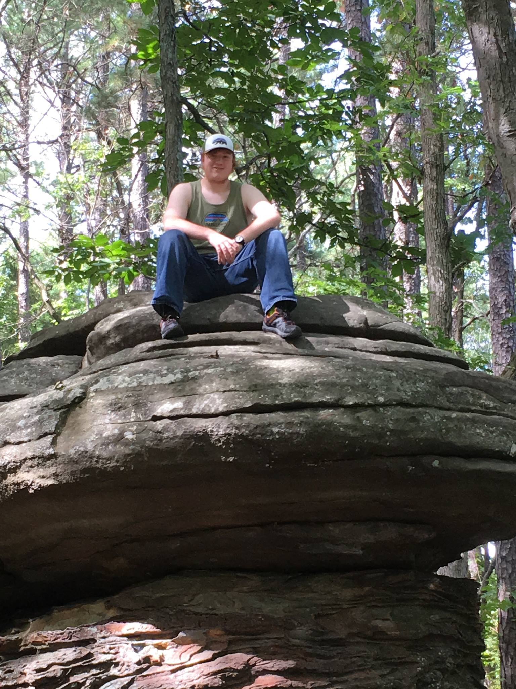

| Home | Bio | Contact | Accounts | Resume | Projects | Miscellaneous |
Clark LindsayCS and ME major
|
|---|
Bio:
Hello, my name is Clark, and I am a CS/ME undergrad at Southern Illinois University Carbondale.
I was born and raised on the Lake of Egypt, about 45 minutes away from campus, and still live there today.
My home was located in the middle of 60 acres of woods that even Livingston wouldn’t dare explore without a map.
It was in these woods that I discovered my love for the outdoors, a love that I still have today.
I was homeschooled, an experience that I wouldn’t trade for the world. From one on one teaching, to taking exams
in my pajamas, homeschool was one of the best things that ever happened to me. Perhaps the greatest gifts my parents
gave me however, were the instillation of a hard work ethic and the groundwork for radical faith. Both qualities were
put to the test when I was 12 and my dad was diagnosed with stage four brain cancer. Losing him a year later was the
hardest thing I’ve ever gone through, but it tempered my character and taught me that, when all else falls apart,
God and church are always constant. I started attending John A. Logan Community College, through the dual enrollment
program, when I was 14. I graduated from there this last Spring with my Associates in Science and an Excellence in
Chemistry award. I transferred to SIU full time this summer and am currently taking classes for the fall semester.
Aside from my classes, I am involved in both the robotics and ACM RSOs, catering to my mechanical engineering and
computer science degrees respectively. I also work on campus in the Engineering Computer Support Center and am part
of the Cornerstone Church college group. Also new this semester, I am doing volunteer research with Dr. Kim from the
Mechanical Engineering department on campus into scanning brain waves using a moving study platform for the animal
test subjects, a project that uses both my coding and machining skills. I am trying to eventually be able to combine
my love for coding and robotics into a job in prototyping advanced AI robots. I would like to thank Mr. McKenzie from
the John A. chemistry department who was the kindest professor I’ve ever had Mr. Dethrow, from the John A. math department
who taught me everything I know about hard work and studying when it comes to college Mrs. Rudolph, former member of the
John A. computer science department for introducing me to the world of software development, my parents for supporting
me in all of my interests and pursuits, my church family for always being there for me, and, most importantly, God for
holding my hand when I run and carrying me when I fall.
